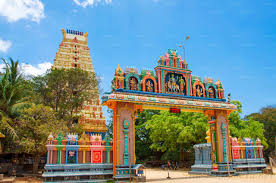
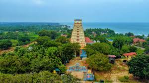
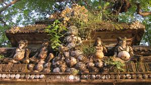

Naguleswaram Temple (Keerimalai, Jaffna)
 
Keerimalai Naguleswaram temple, historically known also as the Thirutambaleswaram Kovil of Keerimalai, is a famous Hindu temple in Keerimalai, located north of Jaffna,
Northern Province, Sri Lanka in the suburb of Kankesanthurai.
One of the oldest shrines of the region, it is the northernmost of the island's Pancha Ishwarams of Siva, venerated by Sri Lankan Tamil Hindus around the world from classical antiquity.
Hindus believe its adjacent water tank, the Keerimalai Springs, to have curative properties, which irrigation studies attribute to high mineral content sourced from underground.
Keerimalai is 50 feet above sea level, and situated west of Palaly.
Hindus flock in large numbers on Aadi Amaavaasai day which falls during the Tamil month of Aadi, to carry out rituals for their forefathers and bathe in the natural springs.
Carried out largely by men, “Keerimalai” is particularly famous for this festival.
The temple was largely destroyed by Jesuit missionaries following the Portuguese conquest of the Jaffna kingdom, restored by Arumuka Navalar in 1894,
was occupied by the Sri Lankan Army in 1983 and bombed by the Sri Lankan Air Force in 1993.
After nearly twenty years, a major expansion and reopening of the temple occurred in 2012.
Keeri in Tamil and nagula in Sanskrit mean "mongoose". Keeri-malai in Tamil means "Mongoose-Hill".
The temple is situated adjacent to the mineral water springs.
The legendary sage Nagula Muni, shrunk by age and austerity while meditating at a cave in Keerimalai was likened to mongooses that frequented the area.
The sage bathed in the springs and was cured of his mongoose face.
In gratitude, Nagula Muni constructed a small shrine and worshipped the Lingam enshrined there.
This became known as the Thirutambaleswaram Kovil of Keerimalai and also the Naguleswaram Kovil of Keerimalai alluding to the sage.
 Location (Naguleswaram Temple ["Keerimalai"-Jaffna])